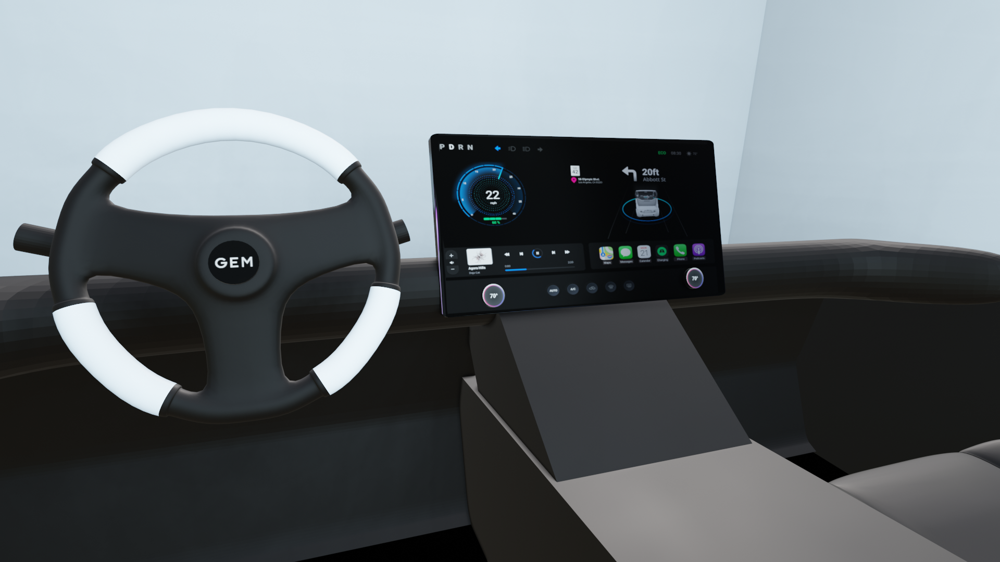

Week 6: Product Interface
Ideation & Approach
First off, I started by sketching out what might be in product interface for my Gem Car dashboard.I am ideally aiming to build out these parts: steering wheel, the blinker controls, the car digital dashboard, and possibly some physical buttons/controls (depending on the direction of my project).
After sketching out my idea of what I need to build out, I started with the first large component in mind which was the steering wheel. I found a helpful YouTube Tutorial that went over how to create a basic steering wheel starting with the torus shape. It was pretty easy to follow but one main mistake that I made and might need to fix is how there is an empty hole in the middle of where the brand logo usually sits.

Other than that, I think the steering wheel is mostly what I'd like to look like. One thing I also need to figure out is how to add in the Gem car logo to the center of the wheel as a 3d shape. I'd want the brandmark to protrude a bit like logos in other cars. My favorite part of the modelling process from the various objects I've made so far is definitely adding in materials and textures. To make the steering wheel look similar to the Tesla steering wheel since I like the materials Tesla uses, I turned down up the roughness after smoothing out the torus. I also would like my car and dashboard to look somewhat minimalistic so I chose a light blue, almost white accent color for the parts of the wheel that the driver holds. And the rest of the wheel is a black material.
Materials on the wheel

Added elements in the product interface
During our 10/24 working session class, I started making basic shapes for the rest of the dashboard such as the screen itself, middle console, steering wheel column and turn signal blinkers. I wanted the dashboard to have a more round shape and used the bevel tool to achieve this. However, it doesn't look exactly as how I wanted it and couldn't figure out how to make it more smooth while not making the indent at the top stay the same depth. I also started adding some materials to the render such as a metal/matte material for the dashboard itself and buttons. I also added in the GEM car logo to the steering wheel.


Added in the digital interface
After making the basic model of the dashboard, I wanted to try out inputting a WIP digital interface mockup made from our Products, Services, and Systems class project.

10/31 Class Progress
During class, I made quite a few changes to the model. First off, I wanted to create a new digital interface since I have changed the direction of my design to having a single screen with tactile buttons on top of the digital interface. I also added in seats, bottom floor, and fixed up the center consoles. In class, I heard classmates mentioning using Blenderkit which I had forgotten about as a tool. So I downloaded it and I found a great selection of chairs to input into the scene!

Previously, there was an empty gap underneath the center console but to make it more realistic, I filled it in with the grab and rotate tools ["g-x" and then "r-y"]. I also smoothed out a lot of the harsh edges for the bottom part of the front console and middle console.
 In my 1:1 session with the professor, we also talked about adjusting the orientation and positioning of certain elements such as how the seats looked too low to the ground from a side view. In the below example, we can see that the middle of the seat is about perpendicular to the wheel so I moved the seats upwards to get closer to that angle. Another trick the professor taught was to view the dashboard from the angle of someone's head through the camera focal point. This way we can see what adjustments are needed.
In my 1:1 session with the professor, we also talked about adjusting the orientation and positioning of certain elements such as how the seats looked too low to the ground from a side view. In the below example, we can see that the middle of the seat is about perpendicular to the wheel so I moved the seats upwards to get closer to that angle. Another trick the professor taught was to view the dashboard from the angle of someone's head through the camera focal point. This way we can see what adjustments are needed.

Added in lighting
At this point, the dashboard is looking pretty good so I started playing around with different lightings such as sun, point, or area so that I can start to capture the final renders. Area seemed to work best since it was natural looking but still provided a good amount of exposure to the scene.

Added in environment
Next, I wanted to add in an environment of a road so that we can see the car and dashboard in context. I used Polyhaven to find some different road environments and tried out different ones until I found a suitable one. Some were too dark or some looked unrealistic so it took a while to find one that fit right. I also added a mesh plane to the right of the dashboard so that it wasn't just an empty gap below the dashboard.

Capturing final renders
Finally, I needed to start capturing various angles of the dashboard so I adjusted the camera focal length and where the camera is through various explorations.

Final Renders
Here you can see the final renders of the product interface with the digital interface incorporated in it.
